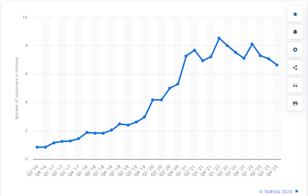
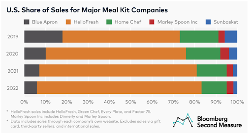
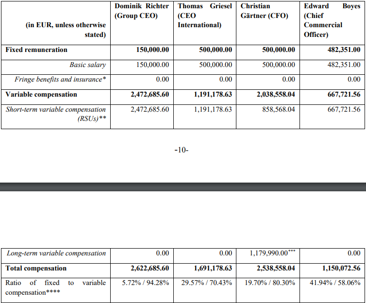
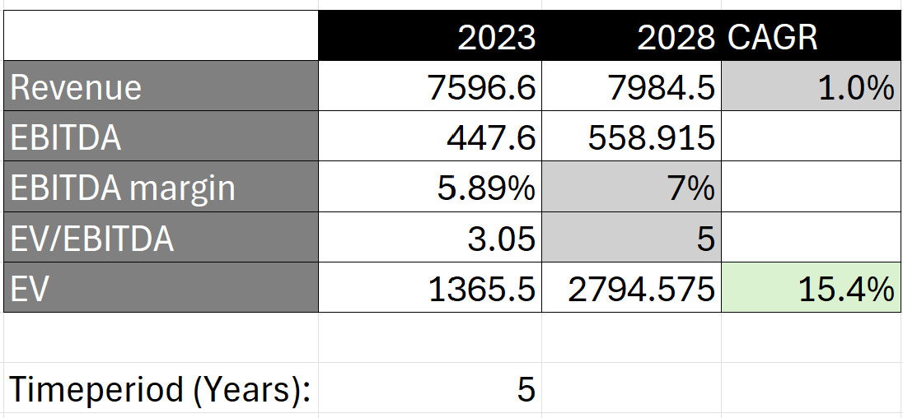

HelloFresh SE Investment Thesis
The objective of this article is to analyze HelloFresh, the meal-kit company, in accordance with the quantitative, qualitative, and valuation principles outlined in previous blog posts. The aim is to ascertain whether it represents a favorable investment opportunity at present.
-
Why did I get interested in HelloFresh?
My initial interest in this business stemmed from personal experience. Both my partner and I share a dislike for cooking, prompting us to explore alternatives. We stumbled upon 'Wetaka', a Spanish private company that offers weekly delivery of prepared dishes. While the food quality wasn't exceptional, it sufficiently alleviated the hassle of shopping, cooking, and cleaning. Despite its slightly elevated price point, we opted to continue using the service. This prompted me to delve deeper into the leading players in the ready-to-eat food delivery industry, given the substantial societal shifts favoring such services:
- Key among these shifts is the departure from traditional gender roles in meal preparation, with both young men and women now expressing aversion to cooking.
- Additionally, there's a growing awareness of the importance of balanced, healthy diets, further driving demand for convenient meal solutions, especially among metropolitan inhabitants who work in large corporate firms.
Upon closer examination, I discovered that HelloFresh was at the forefront of this sector. While their primary business had previously revolved around delivering meal kits requiring cooking, they had pivoted towards acquiring companies offering pre-prepared meals, akin to Wetaka. Furthermore, the current valuation of HelloFresh presents an attractive proposition, being more affordable than ever since the company's initial public offering in 2016. These two facts prompted me to delve further into my analysis.
-
Understanding the business.
-
What products or services does the company sell? What are its different revenue streams? That is, do you understand how exactly the company earns money?
HelloFresh has two main revenue streams and is now expanding into new verticals:
Home Cooking (81.6% of FY2023 revenue)Home Cooking was the company's original focus. Under the brand 'HelloFresh', users subscribe to a weekly meal service where they receive a box containing fresh, pre-measured ingredients along with step-by-step recipe manuals. This service eliminates the need to visit supermarkets, decide on meals, and ensures balanced eating.
Over the years, the company has acquired other meal kit delivery brands, such as 'Green Chef' with premium ingredients, 'Every Plate' offering budget-friendly options, 'Chefs Plate', and 'Good Chop' for responsibly raised meat.
Home Cooking represents a mature market, having been available in the US since 2013 and experiencing significant growth, especially propelled by COVID-19, with meal deliveries quadrupling since 2019. Therefore, the company is grappling with challenges in new customer acquisition, anticipating lower delivery volumes in 2024 compared to 2023. With more moderate growth expectations, company will target faster expansion of meal kit earnings than top-line in the coming years. Nevertheless, it is projected that adjusted EBITDA for 2024 will be inferior to that of 2023, primarily due to fixed cost impacts resulting from volume deleveraging and the implementation of modern fulfillment centers with higher efficiency targets, albeit with initial additional costs.
Ready-To-Eat (18.4% of FY2023 revenue)Ready-To-Eat (RTE) meals are precisely as the name implies: food delivered to your home that requires only heating before consumption. The company acquired Factor, a US brand, in 2020. Since then, Factor's scale has increased more than tenfold, with a 60% growth recorded during 2023 alone. HelloFresh anticipates further growth of over 50% in 2024 compared to 2023. RTE is evidently considered the primary growth driver for the company for both 2024 and 2025, with plans to expand the brand into additional geographical markets. Already making strides in this direction, the company launched Factor in Canada in late 2022, acquired YouFoodz, another RTE brand in Australia, and introduced Factor in the Netherlands in August 2023. The expansion into new locations will continue in 2024.
New verticals (still testing product-market fit)- 'The Pets Table': Direct-to-Customer (D2C) pet food subscription, capitalizing on the humanization of pets trend.
- HelloFresh Market: Online Grocery Delivery Service.
-
How stable is the demand for the company's products?
HelloFresh faces a challenge in customer loyalty, evident in high churn rates. According to bernsteinresearch, only 30% of customers were retained in Q4, while Bloomberg reports a retention rate of only 10% in the 11th month. However, despite these high churn rates, HelloFresh has managed to maintain a consistent base of active customers exceeding 6 million over the past three years. This suggests the existence of a core group of customers who remain loyal to the product. Despite the tailwinds provided by COVID-19, which are gradually fading, this core customer group continues to support the company. The number of active HelloFresh customers worldwide from 2016 to 2023 illustrates this trend:
 -
Is the company highly dependent on external factors?
While the company is affected by macroeconomic conditions, I wouldn't characterize its dependency as highly significant. Historically, challenges have arisen from high inflation, making it difficult to pass on price increases to customers. Additionally, recessions or reductions in consumer spending may impact demand, particularly due to the comparatively higher prices of meal kits compared to purchasing ingredients directly from supermarkets.
-
In which countries does the company operate?
Home Cooking business is available in most first-world countries (US, Canada, EU, Australia, etc.), while Ready-To-Eat is limited to the US, Canada, Australia, and now the Netherlands too.
-
Does the company demonstrate faster growth compared to its competitors?
Yes, as indicated in the provided image.
 -
How easily can the company's market be disrupted?
It appears challenging for new technologies to emerge and disrupt HelloFresh's market. The primary risks to the company have been longstanding, including competition from supermarkets offering hot meals in-store and food delivery companies such as Uber Eats.
-
-
Financial metrics.
Date 6Y CAGR Revenue Fwd 2Y Rev CAGR 6Y CAGR EBITDA Fwd 2Y EBITDA CAGR EBITDA Margin 6Y avg EBITDA Margin 6Y CAGR EBITDA Margin FY2023 LTM Net Debt / EBITDA ROIC 6Y avg ROIC 6Y CAGR ROIC LTM WACC ROIC - WACC CAPEX/Revenues 6Y AVG CAPEX/Revenues 6Y CAGR CAPEX/Revenues LTM Nb of shares CAGR since IPO CAGR price since IPO 04/04/2024 42.60% 4.5% 42.53% 5.1% 3.59% 18.48% 5.9% 0.93 -14.3% 12.7% 6.5% 6.05% 0.45% 3.04% -9.26% 3.3% 0.49% -8.0% The truth is, the company's financial metrics appear quite favorable, with strong six-year compound annual growth rates (CAGR) across revenue, EBITDA, EBITDA margins, and return on invested capital (ROIC). Additionally, the company maintains a manageable level of debt, generates free cash flow (€78M for FY2023) and dilution is not excessive given its growth over the past six years. Regarding ROIC, arguably the most critical metric, the fact that the company's weighted average cost of capital (WACC) is lower than its ROIC, indicates that it is not destroying value as it expands. The only drawback appears to be the underperformance of the stock price since the IPO, which is likely tied to valuation issues, as will be discussed in section 7.
-
Analyzing HelloFresh competitive advantages.
The only significant competitive advantage (MOAT) that HelloFresh possesses is its 'economies of scale'. As the company continues to increase its volumes and expand into synergistic verticals, its costs decrease. This is due to enhanced bargaining power with suppliers, optimization of its supply chain network, and improved manufacturing capabilities. Consequently, HelloFresh can lower prices and reach a broader audience, thus creating entry barriers for competitors.
An excerpt from the company's 2022 annual report illustrating how they have been expanding their supply chain capabilities:

Additionally, albeit to a lesser extent in my opinion, HelloFresh benefits from intangible assets, particularly brand recognition. As demonstrated in section 2, the company maintains a dominant position as the global market leader in meal-kit and ready-to-eat deliveries.
Now, in the table below, we will delve into the Porter's Five Forces Framework:
Porter’s force Value Threat of new entrants Low, owing to high barriers to entry. Threat of substitutes Medium, primarily from supermarkets offering hot meals in-store. Bargaining power of customers Varied; high for new, unconvinced customers, but low for the affluent loyal core customer group, as HelloFresh is the market leader and almost unique option. Bargaining power of suppliers Expected to increase as the company grows. Competitive rivalry Very low, with HelloFresh almost monopolizing the market, as evidenced in section 2. -
Management.
The company was founded in 2011 by Dominik Richter, who continues to serve as CEO, and Thomas Griesel, the current CEO of the international division. Jessica Nilsson, another co-founder, departed in early 2014. Dominik currently holds 4% of the company's shares, making him the fourth largest shareholder. Management compensation is notably aligned with the company's stock performance, as illustrated in the accompanying image.
Moreover, management demonstrates adept capital allocation and a willingness to make bold decisions. For instance, they opted to discontinue operations in Japan in 2022 to focus on more promising markets. Additionally, the initiation of a buyback program in 2023/2024 highlights their commitment to enhancing shareholder value.
-
Risks to be monitored.
The goal of this section is to analyze the current main risks perceived by the market regarding the company's discounted valuation, and to provide my opinion on whether these risks are deemed punctual (PU), permanent (PE), or fall somewhere in between (B).
Risk Facts confirming it Type (PE, PU, B) Comment Main revenue stream degrowing Active customers down ~25% from peak (Q1’22). B While home cooking may have peaked, I believe RTE growth will offset this in the future. Company’s profitability decreasing 2023 Adj EBITDA of 448€ M, down 6% YoY. 2024 adj EBITDA YoY growth expected to be negative. B The company attributes this to high marketing costs and expanding the ready-to-eat business. However, they expect EBITDA margins to increase from current ~6% to ~10% in the future. Low customer retention and high levels of marketing spend Only 10% of customers remain after 11 months. Marketing annual spend is ~15% of revenue. PE Indeed, HelloFresh's business faces a high churn rate because, unfortunately, the service is too expensive for most customers. However, I believe there is a significant group of core affluent customers who find ample value in the product. Here's a customer statement: 'Not only is it a great way to discover new recipes I might not have otherwise tried, but it's also convenient and alleviates the stress of brainstorming ideas and shopping for ingredients during busy or tiring periods of my life.' Not able to fully transfer inflation costs to customers In 2022, +14% food inflation while HF price increased only +7% B While management claims that this was intentionally done to enhance the value proposition, my opinion is that customer demand may not be as robust, and management appears to prioritize expanding the business for now despite this. Management forecast continuously wrong Profit warnings were issued, and deliveries fell at the lower end of the forecast range in both 2022 and 2023. For example, the FY2022 revenue growth was forecasted at 20 to 26% in their annual report for 2021, but they ultimately achieved only 18%. Similarly, the 2022 report projected a growth range of 2 to 10%, but the actual delivery was 2.8%. PU It's imperative for management to learn from past mistakes and adopt a more conservative approach to forecasts, since profit warnings are very bad received by the market. -
Valuation.
We will commence this valuation section by comparing HelloFresh's current multiples with historical ones.
Date 10Y CAGR price Nb Analysts Avg estimated price Current price NTM EV/Revenue EV/Revenue AVG 6Y NTM EV/EBITDA EV/EBITDA 6Y AVG NTM PE PE AVG 6Y PEG NTM MCap /FCF NTM MCap /FCF 6Y AVG Dividend yield 04/04/2024 -8.00% 17 10.42 6.45 0.18x 1.27x 3.78x 18.33x 16.51x 19.51x ~10 123.9x 178.2x 0 It is understandable that the company is now much cheaper than in the past, as it no longer appears to be a growth company but rather a mature one.
Now, let's compare it against different competitors: some supermarkets, food companies, and food delivery ones.
Company Fwd 2y Revenue CAGR Fwd 2y EBITDA CAGR NTM EBITDA margin NTM EV/EBITDA Historical EV/EBITDA AVG* Carrefour 4.0% 7.8% 5.6% 5.35x 6.51x Tesco 3.3% 4.4% 6.7% 6.79x 7.6x Mondelez 3.8% 7.2% 19.9% 14.84x 14.22x Walmart 4.1% 6.2% 6.0% 13.09x 9.44x Uber 16.0% 43.7% 14.3% 26.44x -146.2x HelloFresh 4.5% 5.1% 4.6% 3.78x 18.33x *Maximum between IPO or 15 years ago.
Why is the market sentiment so negative towards HelloFresh?In my opinion, this negativity stems from the significant risks outlined in section 6, which are substantial and cannot be disregarded. Other reasons may include:
- Lots of negativity due to terrible stock price performance: -41.2% since IPO (Nov’2017) and -93.3% since peak (Aug’21).
- Absence from notable investor portfolios (https://www.dataroma.com/m/home.php).
If the stock market closes for 10 years, would I be ok holding the company? (i.e. Terminal Value)In my view, a company that generates free cash flow, maintains manageable debt, and holds a dominant market position (close to a monopoly) has minimal chances of bankruptcy and dissolution.
Security marginHere's my valuation, assuming quite conservative hypotheses: the scenario below considers that during the next 5 years: a) the company grows revenue at 1% annually; b) EBITDA margin improves from 5.9% to 7.0% (company's stated long-term goal is 10.0%). With these numbers, and considering how competitors are valued, it is not far-fetched to expect the EV/EBITDA multiple to improve to 5x, resulting in an annual Enterprise Value growth of 15.4% by 2028. If dilution continues at the same rate as in past years, 0.49% annually, and cash and debt doesn’t change much, we can anticipate the stock price to increase by more than 90% from current levels (or >14% CAGR).
 -
Conclusion.
In my assessment, with the current share price of €6.45, HelloFresh appears undervalued and shows potential to outperform the market. I anticipate stable revenue growth at a low single-digit rate in the short term, with Ready-To-Eat (RTE) products gradually gaining a larger market share. Eventually, this vertical may also peak, prompting the company to focus on enhancing margins, generating free cash flow, and returning capital to shareholders. I hold this belief because I see a global market for such products/services (home cooking meal kits and ready-to-eat), evidenced by a loyal customer base exceeding 6 million active users. This market is further bolstered by the tailwinds mentioned in section 1, and HelloFresh is positioned to remain the dominant player due to its competitive advantages outlined in section 5. Moreover, given the company's robust balance sheet and proven hyper-scaling playbook, there is ample opportunity for further acquisitions (perhaps including the aforementioned Wetaka Spanish company).
However, I anticipate the stock price to remain low for some time, as the market would need to see some positive numbers (in terms of revenue growth or margin improvement, which doesn’t seem likely to occur in 2024) before changing sentiment. Additionally, it seems unlikely that there will be other catalysts soon, such as M&A activities or inclusion in new indexes (the company is currently in MDAX after dropping from DAX in 2022 and is quite distant from its last component, Zalando).
Contact If you have any doubts or would like to exchange thoughts, please feel free to contact me. I will respond as soon as possible.
Send email